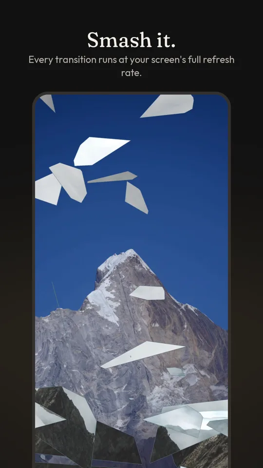

Vos vidéos et photos en fond d’écran animé sur Android.
Choisissez une vidéo, un GIF ou une photo de votre téléphone et regardez-le tourner en boucle sur votre écran d’accueil. Créez une playlist et votre fond d’écran change tout seul, avec 123 transitions entre chacun.
Gratuit sur Google PlaySans pub. Sans compte. Vos fichiers ne quittent jamais votre téléphone.

Voyez-le en mouvement
123 transitions entre vos images





Ce qu’il fait
Fond d’écran vidéo
N’importe quelle vidéo ou GIF de votre téléphone, de toute durée. Voyez la boucle avant de l’appliquer, coupez-la et choisissez où elle commence.
Changeur de fond d’écran
Des playlists de vidéos, GIF et photos qui changent toutes seules, avec une lecture aléatoire qui ne se répète jamais.
123 transitions
Eau, lave, verre, sable, trou noir, anime, BD, rétro et plus, avec une vraie physique.
Des photos qui prennent vie
La personne ou l’animal de votre photo respire, cligne des yeux et se penche vers votre doigt.
LoopPaper Studio
Donnez vie à vos propres photos : ciels en mouvement, eau qui coule, fenêtres qui s’allument la nuit, auras, effets anime et cinémagraphes. 3 gratuits.
Votre photo en tissu
Une bannière, un drapeau, une tapisserie ou un fanion qui se balance quand vous inclinez le téléphone, ou des rideaux de théâtre qui s’ouvrent au déverrouillage. Choisissez soie, velours ou toile, et le vent du calme à la tempête.
Une horloge derrière votre sujet
Des styles d’horloge haut de gamme, placés autour ou derrière la personne de votre image.
Pensé pour les pliables
Une playlist différente sur l’écran intérieur et l’écran externe, mode livre et mode table.
Économe en batterie
Se repose dès que l’écran est éteint et peut se mettre en pause en économie d’énergie.
Privé
Sans pub, sans compte, sans pistage. Vos photos restent sur votre téléphone.
Questions
Comment mettre une vidéo en fond d’écran sur Android ?
Installez LoopPaper, touchez Choisir, sélectionnez une vidéo ou un GIF de votre téléphone, regardez la boucle dans l’aperçu, puis touchez Définir comme fond d’écran. Vous pouvez aussi toucher Partager sur une vidéo dans la Galerie ou Google Photos et choisir LoopPaper.
LoopPaper est-il gratuit ?
Oui. Mettre une vidéo, un GIF ou une photo en fond d’écran animé est gratuit, sans pub, sans filigrane et sans compte. LoopPaper Plus est un achat unique facultatif qui débloque les playlists illimitées, les 123 transitions et les effets en plus. L’essai de 7 jours ne commence que si vous touchez Commencer l’essai et ne devient jamais un abonnement.
Mon fond d’écran peut-il changer automatiquement ?
Oui. Créez une playlist de vidéos, GIF et photos et LoopPaper passe de l’un à l’autre tout seul, avec une transition entre chacun.
Un fond d’écran animé vide-t-il la batterie ?
LoopPaper se repose dès que l’écran est éteint et peut se mettre en pause en économie d’énergie : il ne travaille que pendant que vous le regardez.
Mes photos sont-elles envoyées quelque part ?
Non. Vos fichiers restent sur votre téléphone. LoopPaper ne les envoie jamais, et tout ce qu’il fait sur une photo se passe sur le téléphone.